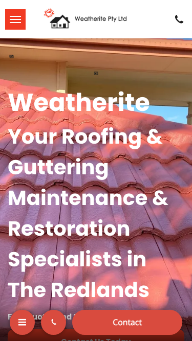
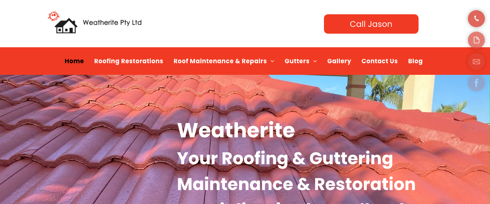
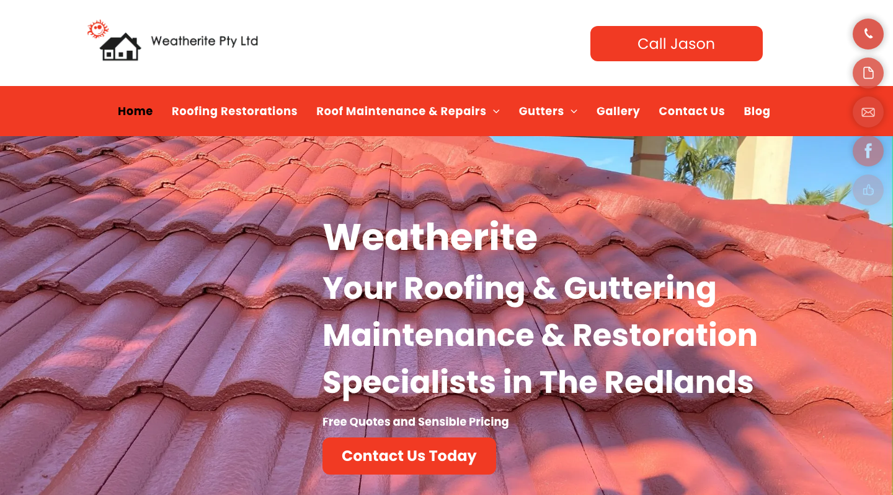
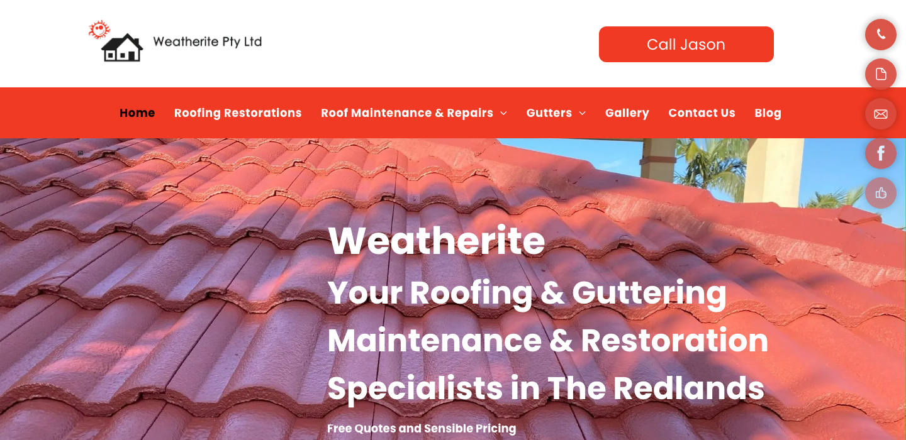
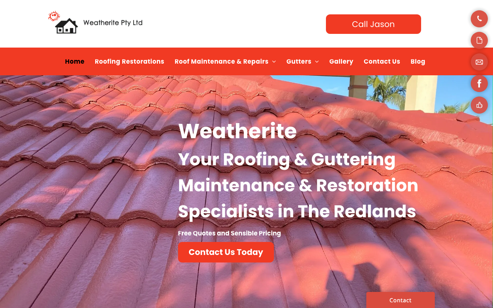

Internal Audit Report · ProfitsLocal
roofer ·Brisbane · ★ 5 (4 reviews)
总体判断
audit_score=58 → moderate_candidate · weakest: gbp 24, visual 50
联系方式 + GBP 快照
—六维度评分总览
现场证据 · 桌面 + 移动

主要问题 · 1 项
homepage_title_clear
命中原因title='# Your Roofing & Guttering Maintenance & Restoration Special' contains-name=false contains-niche=false
证据截图 · Desktop 600px region

规则细节 · 39 项明细
| 规则 | 命中 | 得分 | 原因 |
|---|---|---|---|
has_website_link | ✓ | 10/10 | website: https://www.weatherite.com.au/ |
review_volume_vs_peers | ✓ | 4/25 | 4 reviews |
average_rating | ✓ | 10/10 | ★5 |
has_hours | ✗ | 0/5 | no hours |
image_count | ✗ | 0/10 | 0 images |
has_business_description | ✗ | 0/10 | no description |
has_service_area | ✗ | 0/15 | no service area |
owner_replies_to_reviews | — | 0/15 | reply rate not enriched |
| 规则 | 命中 | 得分 | 原因 |
|---|---|---|---|
https_enabled | ✓ | 20/20 | https |
first_paint_under_3s | — | 0/25 | LCP not measured (need Playwright/Lighthouse) |
mobile_responsive | ✓ | 30/30 | lighthouse mobile 80 |
core_web_vitals_pass | — | 0/10 | CWV not measured |
form_submittable | — | 0/5 | form submit not tested |
no_console_errors | ✗ | 0/5 | 1 console errors |
favicon_and_meta | ✓ | 5/5 | favicon: yes, meta: yes |
| 规则 | 命中 | 得分 | 原因 |
|---|---|---|---|
above_fold_cta_within_5s | ✓ | 30/30 | CTA keyword found above fold |
phone_visible_above_fold | ✓ | 20/20 | phone digits above fold |
click_to_call_link | ✓ | 10/10 | tel: link present |
quote_or_booking_form | ✗ | 0/20 | no form |
contact_path_short | — | 0/10 | click-depth not measured |
has_gallery | ✓ | 5/5 | gallery mentioned |
has_testimonials | ✓ | 5/5 | testimonials section present |
| 规则 | 命中 | 得分 | 原因 |
|---|---|---|---|
homepage_title_clear | ✗ | 0/20 | title='# Your Roofing & Guttering Maintenance & Restoration Special' contains-name=false contains-niche=false |
service_copy_specific | ✓ | 20/20 | 48 service-related verbs detected |
trust_signals_present | ✓ | 20/20 | 4 trust-keyword mentions |
localized_content | ✓ | 15/15 | mentions brisbane |
evidence_of_recent_update | ✗ | 0/15 | no recent year (≤ 1 year ago) |
non_ai_filler_copy | ✓ | 10/10 | no obvious AI-filler |
| 规则 | 命中 | 得分 | 原因 |
|---|---|---|---|
title_meta_present | ✓ | 25/25 | title=yes meta=yes |
h1_unique | ✓ | 20/20 | 1 <h1> tags |
local_schema_markup | ✓ | 20/20 | LocalBusiness schema present |
image_alt_present | ✓ | 20/20 | 62 images, 95% with alt |
sitemap_robots | — | 0/15 | /sitemap.xml + /robots.txt probe not run (need Playwright) |
| 规则 | 命中 | 得分 | 原因 |
|---|---|---|---|
visual_dimension_stub | — | 50/100 | visual dimension is filled by Block E (vision LLM autoresearch) |
视觉审计 · Vision LLM
A functional but visually dated WordPress-template site where the mobile layout buries the CTA below fold, no phone number is displayed on screen, and zero social proof appears above the fold — three compounding conversion barriers for local-search visitors.
mobile_cta_below_fold
观察到On mobile, the hero headline ('Your Roofing & Guttering Maintenance & Restoration Specialists in The Redlands') fills the entire viewport in large white bold text against the roof-tile photo. The 'Contact Us Today' orange button seen on desktop is not visible — only a small floating 'Contact' bar appears at the very bottom edge of the screen, partially cropped.
为什么是问题A visitor arriving from a Google search on their phone sees only a block of text and a background photo. There is no obvious next step visible without scrolling. Most people will leave within 8 seconds if they cannot find how to act immediately — this site gives them nothing to tap in the first screen.
正确长啥样Hero headline limited to 2–3 lines at ~28px on mobile, followed immediately by a full-width tappable phone button (min 48px tall, showing the actual digits) — all visible within the first 600px of the mobile viewport without any scrolling.
redesign 怎么改Reduce the hero H1 font size on mobile to 26–28px so the headline fits in 3 lines maximum. Place a full-width 'Call Jason: 04XX XXX XXX' tel: button in high-contrast orange directly below the headline, inside the hero section, above the fold.
证据 · 移动端截图
phone_number_hidden_behind_click
观察到On both the desktop and mobile screenshots, the top-right shows an orange 'Call Jason' button but no actual phone number digits appear anywhere on the visible page. The number is hidden behind a click interaction.
为什么是问题Local customers comparing several roofing businesses want to see a real phone number immediately — it signals the business is reachable and established. Hiding the number behind a button creates friction and doubt. Many people also copy the number to call later from a different device and cannot do so if it is never shown.
正确长啥样On desktop: 'Call Jason · 0412 345 678' displayed in the header so the number is readable at a glance without clicking. On mobile: a full-width tap-to-call button that displays the complete number as text, e.g. 'Call Now: 04XX XXX XXX'.
redesign 怎么改Replace the 'Call Jason' button label on desktop with 'Call Jason · 04XX XXX XXX' (actual number) in the header. On mobile, the floating Contact button should show the full number as text on the button face. Use a tel: href so it dials directly.
证据截图 · Desktop 800px region

no_social_proof_above_fold
观察到The hero section on both desktop and mobile shows only the business name, the tagline, the 'Free Quotes and Sensible Pricing' subtext, and a CTA button. There are no star ratings, Google review counts, or customer testimonial snippets visible anywhere in the hero or the navigation bar.
为什么是问题Roofing is a high-cost, high-stakes purchase — homeowners are trusting a stranger with their home. Without a visible review count or star rating in the first screen, a visitor has no independent evidence the business is trustworthy. They will click Back and check the next Google result that shows social proof.
正确长啥样A '4.9 ★ — 93 Google Reviews' badge placed directly under the hero headline, or a one-line customer quote ('They replaced our whole roof — done in 2 days, brilliant job — Sarah, Capalaba') in smaller text beneath the CTA button.
redesign 怎么改Add a Google review summary component inside the hero section below the headline: star icons (SVG), review score, and review count. Link it to the Google Maps profile. Optionally add one short rotating testimonial quote beneath the CTA.
证据截图 · Desktop 700px region

geographic_targeting_redlands_not_brisbane
观察到The hero H1 on both desktop and mobile reads 'Your Roofing & Guttering Maintenance & Restoration Specialists in The Redlands'. There is no mention of Brisbane anywhere in the hero section or the visible navigation.
为什么是问题A visitor searching 'roofer Brisbane' who lands on this page immediately reads 'The Redlands' and may assume the business does not service their suburb. Even if the business covers all of Brisbane, the headline actively creates geographic doubt and can cause visitors from Wynnum, Capalaba, Manly, or the wider Bayside area to leave before reading further.
正确长啥样A headline that leads with the broader metro area: 'Brisbane's Trusted Roofing & Guttering Specialists' with a secondary line 'Proudly Serving The Redlands, Bayside & South-East Brisbane' to keep local specificity without excluding the wider market.
redesign 怎么改Rewrite the hero H1 to lead with 'Brisbane' as the primary location identifier. Demote 'The Redlands' to a supporting descriptor line beneath the headline or in the subtext. This broadens appeal without losing the local signal.
证据截图 · Full desktop
dated_visual_design
观察到The overall layout — a full-width hero photo with a heavy red/dark colour overlay on the left half, an orange rounded-corner gradient CTA button, a flat red navigation bar, and a small icon-beside-text logo — matches the aesthetic of generic WordPress themes popular in 2015–2017.
为什么是问题When a homeowner is about to spend thousands on a roof restoration, they subconsciously assess whether a business is current and successful. A website that looks decade-old signals that the business may not be investing in quality, which extends to how they perceive the quality of the work itself.
正确长啥样A clean, high-contrast layout with a natural (un-tinted) photo of a completed roof job as the hero background, a white or charcoal header, one strong accent colour consistently applied, and modern sans-serif type at 18px+ body size.
redesign 怎么改Replace the heavy red photo overlay with a natural full-bleed image of a completed roof. Switch the nav background from flat red to white or dark charcoal. Use a single accent colour (deep slate blue or forest green) for buttons. Remove the gradient bevel from all button styles. Set body font to Inter or similar at 18px.
证据截图 · Full desktop

logo_too_small_unreadable
观察到In the top-left corner of both screenshots, a small house/roof icon sits beside the text 'Weatherite Pty Ltd'. The icon appears to be approximately 30px tall and the accompanying text is rendered at roughly 11–12px — illegible without zooming in.
为什么是问题The logo is the primary brand identity signal on the page. If visitors cannot read the business name at a glance, it reduces brand memorability and professionalism. For a local business that depends on repeat and referral customers, being unmemorable is a real cost.
正确长啥样Logo icon at minimum 40px tall in the desktop header, with 'Weatherite' wordmark in clear text at 16px+. On mobile, show only the icon and 'Weatherite' (drop 'Pty Ltd') at 40px to save horizontal space.
redesign 怎么改Increase the header logo height to 56px on desktop and 44px on mobile. Remove 'Pty Ltd' from the mobile logo display — show 'Weatherite' only. Ensure the logo has sufficient contrast against both the white header and any dark background variants.
证据 · 移动端截图
nav_overcrowded
观察到The desktop navigation bar contains seven separate items: Home, Roofing Restorations, Roof Maintenance & Repairs, Gutters, Gallery, Contact Us, Blog — with at least two of those items showing dropdown chevrons.
为什么是问题A local-search visitor has one primary goal: decide if this business can help them and contact them. Seven navigation options and nested dropdowns create unnecessary decision friction and pull the eye away from the CTA button. The more choices presented, the less likely visitors are to take any action.
正确长啥样Five or fewer top-level navigation items: Services (dropdown consolidating the three service pages), Gallery, About, Contact — with the phone CTA button always visible in the top-right, visually distinct from the nav links.
redesign 怎么改Consolidate 'Roofing Restorations', 'Roof Maintenance & Repairs', and 'Gutters' under a single 'Services' dropdown. Move Blog to the footer. Keep the phone CTA visually distinct from navigation with a contrasting background colour.
证据capture failed: locator.screenshot: Timeout 29996.259999999995ms exceeded. Call log: - taking
需要保留的优点
Redesign 优先级
⏳ 评论挖掘按需生成（仅高价值 lead 跑，加 --with-reviews 触发）。会补充：
加载速度证据 · 慢速 4G 移动网络
下方视频在 1.6 Mbps 下行 / 150ms 延迟 / 4× CPU 节流条件下录制 — 这是大多数本地搜索访客在手机上真实看到的体验。
⏳ Mockup 站点对比视频 — 等 ProfitsLocal 真实 mockup 上线后录制 side-by-side 对比。
销售切入点